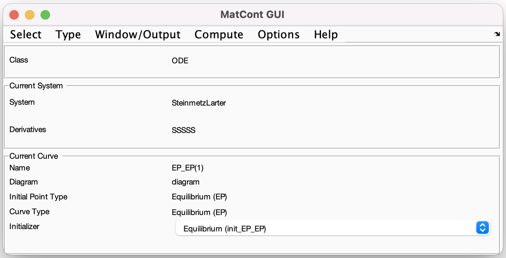
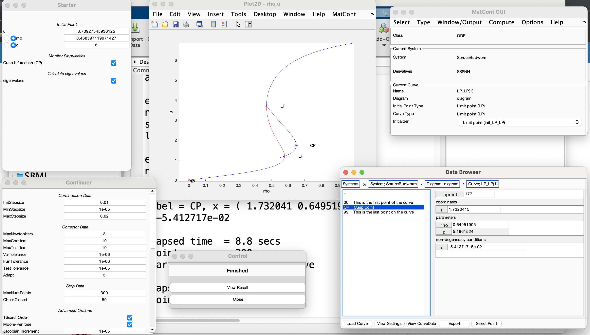

Lab 03: Bifurcations
This exercise in based on MatCont, a sophisticated software for computing bifurcation diagrams of system of ODEs and discrete maps. It is based on Matlab.
Installation of MatCont
The installation is easy, but it requires some care on macOS and Windows. In Matlab, try the following:
unzip('https://gitlab.utwente.nl/m7686441/matcont/-/archive/main/matcont-main.zip')
cd matcont-main
matcontIf the last command fails, then follow the instruction below and try again with the command init, only after mex -setup returns success.
You need to install the XCode, which is several GBs. After installation, open it once and follow the instruction to accept the license.
If you succeeded, then you should see in Matlab:
mex -setup
MEX configured to use 'Xcode with Clang' for C language compilation.An easy option is to install the Matlab add-on MiniGW for Windows 10 or 11 64-bit. See the webpage. Try with mex -setup to check the compiler after installation.
Note: if you already have Microsoft Visual C++ it should work already without MiniGW.
It should work out of the box. However, the compiler provided by your distribution might be too recent to work well with MEX. In this case, you might get some warnings during the compilation. On widespread distributions like Ubuntu it is usually fine.
Spruce-budworm system
We start with a simple model to get familiar with MatCont. Open the program by typing matcont in the program folder. (only after running init at least once.) You should see

plus some other windows that you can ignore for now.
In this exercise we want to study the bifurcation diagram of the Spruce-Budworm ODE \[ u'=f(u,\rho,q)=\rho u\Bigl(1-\frac{u}{q}\Bigr) - \frac{u^2}{1+u^2}, \]
with respect to the parameters \(\rho\) and \(q\). Remember that we rescaled the ODE assuming: \[ u(t) = \frac{N(t)}{\nu}, \quad \tau = \frac{\alpha P^*}{\nu} t, \quad \rho = \frac{r\nu}{\alpha P^*}, \quad q = \frac{K}{\nu}, \]
where
- \(N(t)\) is the population of budworms,
- \(r\) is the intrinsic growth rate,
- \(P^*\) is the number of predators of the budworms (e.g., birds),
- \(\alpha\) is the attack rate,
- \(K\) is the carrying capacity,
- \(\nu\) is the value of \(N\) yielding half of the maximum killing rate.
Create a new system
Select->System->New. In the new window, compile as follows:- Name:
SpruceBudworm - Coordinates:
u - Parameters:
rho,q
Put the first 3 derivatives to
symbolically. (Ifsymbolicallyis disabled, install the Symbolic Toolbox.)Write the equation in the textbox at the bottom, using a natural language:
u' = rho*u*(1-u/q)-u^2/(1+u^2)Press
OK.We should see something like this:
- Name:
Now we compute an orbit. We start at \(t=0\) with \(u(0)=0.1\). The initial parameters are: \(\rho=1\) and \(q=8\).
We do as follows:
Type->Initial Point->Point- In
Starter, we set the initial conditions and parameters - In
Methods, reduce the tolerance for numerical integration - In the main window,
Compute->Forward, then inspectView Results.
To visualize the solution,
Window/Output->Graphic->2D Plot,- Select in
Layouttime as ascissa and \(u\) as ordinate, - In the plot window,
MatCont->Redraw Curve.
Clearly we are not yet at equilibrium. Go back and increase the integration time in
Methods, then try again.
The first attempt should be like this:

Increasing the final time gives:
Once we have reached an equilibrium, we can try to continue it with respect to \(\rho\).
Select as initial point the last integration point of the orbit:
Select->Initial Point. You should notice that in theStarterwindow we now have different values.To continue an equilibrium,
Type->Initial Point->EquilibriumType->Curve->Equilibrium- Select in
Starterthe parameter of interest, that is \(\rho\) for us - In
Continuerwindow, reduce theMaxStepsizeto0.02and theMaxNumPointsto100. (This is not strictly necessary, just to be safe.) - In
Plot2D(if not open, open it withWindow/Output->Graphic->2D Plot) change the layout to parameterrho(range \([0,2]\)) in the ascissa andu(range \([0,10]\)) on the ordinate. Clear the plot. - In the main window,
Compute->Forward.
What do you observe?
Try now with
Compute->Backwardand thenCompute->Extend. You should get a Limit Point (LPin MatCont). Continue to extend (on the left) the curve until you get anotherLPand a Branch Point (BP). Stop here.
We have
For the forward integration, we have no bifurcation points.
After backward continuation, we encounter 3 bifurcation points: 2 limit points (LP) and 1 branch point (BP). Their coordinates are
| Bifurcation | \(u\) | \(\rho\) |
|---|---|---|
| LP | 3.71 | 0.469 |
| LP | 1.19 | 0.579 |
| BP | 0 | 0 |
The figures can be found in the Data Browser.
In order to visualize the stability, you need to change the
Plot Properties, and set what you prefer forEP if unstable, e.g., a dashed line. Redraw the previous plot and check which branch of the equilibrium curve is unstable.Alternatively, try to plot in 3-D the parameter, the coordinate and the real part of the eigenvalue (navigate the
Layoutpanel).
Note that the intermediate branch is unstable.
Try again with different values of \(q\), for instance \(q=1\), \(q=5\) and \(q=10\).
One way to compute the initial equilibrium point is to start with a new orbit (
Select->Curveand thenNew). Then you can repeat the above process. Do not clear the plot: we can keep multiple curves.Do you observe limit points in all cases?
No, this is the case for \(q=1\):
It seems that for small \(q\) there are no limit points, whereas for large \(q\) we have 2 points. In particular, as we decrease \(q\) the limit points get closer, thus we expect a collision. Such collision is another type of bifurcation, called cusp bifurcation, which has co-dimension 2. That is, it involves 2 parameters.
We can easily compute the cusp point in MatCont
- Select an equilibrium curve with at least a limit point (
Select->Curve) - Select the limit point (
Select->Initial Point) - Select
Type->Initial Point->Limit Point - Select
Type->Curve->Limit Point - In the
Starterwindow, we now have to select 2 parameters: select bothrhoandq(as active parameters, the box on the right.)
Now we can compute the curve with
Compute->BackwardorCompute->Forward. Extend it a few times if necessary. Find \(\rho\) and \(q\) corresponding to the cusp.- Select an equilibrium curve with at least a limit point (
Here is the cusp: 
The value of the bifurcation is \((\rho,q)=(0.650,5.196)\). So, for lower values of \(q\) there is no folding, thus no limit points.
Try to visualize the plot in 3-D.
To get an idea of the function, consider \(\rho\in[0,1]\), \(q\in[0,10]\) and \(u\in[0,10]\). Find the equation that implicitly define the surface of equilibria (parametrized in \(\rho\) and \(q\)).
Use the command
isosurfaceas follows:[R Q U] = meshgrid(0.0:0.01:1,0.0:0.1:10,0:0.1:10); V = ...; % <- EDIT! p = patch(isosurface(R,Q,U,V,0.0)); isonormals(R,Q,U,V,p); p.FaceColor = 'red'; p.EdgeColor = 'none'; daspect([1 10 10]) view(3) camlight; lighting phong
The function should be
V = RHO.*(1-U./Q) - U./(1+U.^2);You should see this: 
If you don’t get it, MatCont is messing up with Matlab plotting. Try closing MatCont (no worries, the last state is saved.)
- With the 3-D plot at hands, with a fixed value of \(q\), explain the effect of hysteresis by imaging a “person moving on the landscape”. What does the ridge of limit points represent? And the cusp?
For a fixed value of \(\rho\) and \(q\), the equilibrium is exactly on the surface. Since we can have more than one intersection (in particular in the bistable region), there could exist multiple equilibria.
For a fixed value of \(q\), but taking \(\rho\) variable, we are taking sections of the surface with the plane \(q=\bar{q}\). Here, we may get the sigmoidal curve of equilibria, or just a curve with no bifurcations. In the 3D plot, the ridge of the “cliff” corresponds to limit points (and the same for the back face).
The top of the cliff is the outbreak region, the bottom is the refuge. So, we get the hysteresis by first falling off the cliff, then walking in the shaded region, and go up again from behind (ok, this is perhaps far fetched as an analogy…)
Another interesting path, after falling down, is to walk towards lower values of \(q\), where there is no cliff. Then we can climb again without the need of undergoing the bifurcation.
Rosenzweig-MacArthur model
A sufficiently complex prey-predator model is the following: \[ \left\{\begin{aligned} u' &= u \Bigl(\rho (1-u) - \frac{\alpha\delta v}{1+\delta u}\Bigr), \\ v' &= v\Bigl(-1 + \frac{\alpha\delta u}{1+\delta u}\Bigr), \end{aligned}\right. \]
where \(u(t)\) and \(v(t)\) are the (non-dimensionalized) number of preys and predators, respectively.
- Implement the model in MatCont and integrate a trajectory \(\alpha = 3\), \(\rho = 1\) and with initial conditions \(u(0)=0.9\) and \(v(0)=0.9\). As integration time put a large number, say \(T=100\). Try different values of \(\delta\in[0,5]\), and discuss the behaviour of the system. Hint: you can plot multiple trajectories on the same graph. Try to visualize the phase portrait.
This is what we get for \(\delta=1\). The equilibrium is at \((u,v) = (0.5,0.25)\). For larger values of \(\delta\) we may converge towards the carrying capacity.
Note: don’t call the parameter \(\alpha\) with alpha, MatCont will complain. Use alph, for instance.
- Approximate the equilibrium \(E^*\), intersection of the two non-trivial nullcline, for \(\delta = 0.6\). Then, continue the equilibrium with respect to \(\delta\). How many bifurcation point do you observe? Visualize the diagram in the coordinates \((\delta,v^*)\) and discuss it.
After integration for \(\delta=0.6\), we have: After continuing the equilibrium with respect to \(\delta\) we have: Notice that we encounter a Hopf bifurcation for \(\delta = 2\).
- Is the equilibrium \(E^*\) always a focus? Hint: plot the imaginary part of one eigenvalue with respect to \(\delta\).
No, for \(\delta\) small the eigenvalue is only real.
At some value of \(\delta\) (which one?) there is a Hopf (
H) bifurcation. It means that from the equilibrium we should expect the emergence of a limit cycle. Select as initial point the Hopf point. Then do:Type->Initial Point->HopfType->Curve->Limit Cycle- In
Starter, selectdeltaandperiodas continuation parameters Compute->Backward(or forward, it may vary)
Try to visualize the limit cycles in 3-D, using the coordinates \((\rho,u^*,v^*)\). What’s the period of the cycle at the end of the branch?
We see that the limit cycle increases in size as \(\delta\) increases.
- Define a user function (
Select->System->Manage Userfunctions) to monitor when \(\delta = 2.5\) (for instance,res=delta-2.5). Once defined, activate it in theStarterwindow when continuing the Hopf bifurcation into a limit cycle. Find the period of the cycle for \(\delta = 2.5\).